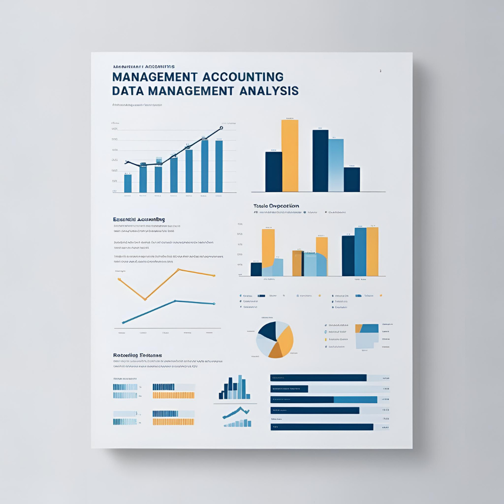

Management Analytics
HQ 비용 상세 분석
관리회계 비용 구조 분석 및 최적화를 통한 투명성 및 효율성 개선
2024.01 - 2024.10
- - 관리회계 비용 구조를 명확히 분석하여 서비스 및 프로젝트별 비용 관리 체계 강화
- - 부서별·서비스별 비용 데이터를 기반으로 예산 책정 및 관리 체계 개선
- - 서비스 공통 업무로 배분된 MM과 간접비 투입 현황을 분석하여 부서 간 협업 및 업무 연관성 강화
#R
#SQL
#plotly
#Quarto

Predictive Analytics
리니지IP 사용자 수 및 매출 예측
GAM 모델을 활용한 게임 트렌드 예측
2024.07 - 2024.12
- - Generalized Additive Model (GAM) 기반 시계열 모형을 활용한 DAU 및 매출 예측
- - 리니지M 에피소드제로, 리니지2M 신서버에덴, 리니지W 해골 업데이트 효과 분석
- - 고객 유형 분석을 통한 마케팅 지표 생성 및 지표 관리
#R
#Python
#SQL
#GAM
#Time Series
#MLflow

Business Analytics
리니지2M 고객 표준 모형 개발
데이터 기반 과금 유형 및 주기별 유저 세분화를 통한 고객 분석
2024.06 - 2024.10
- - 리니지2M 유저를 과금 유형별로 세분화하여 고객군의 특성과 결제 패턴을 체계적으로 분석
- - 세분화된 고객 데이터를 활용해 월별 결제액 추이 및 유저 전환 현황을 분석하여 인사이트 도출
#R
#SQL
#ggplot2
#tidyverse

Management Analytics
관리회계 데이터 기반 분기 리포트 개발
관리회계 및 경영 지표 분석을 통한 의사결정 지원
2022.10 - 2023.12
- - 전사 서비스 및 프로젝트별 비용 집행 현황을 시각화하여 비용 구조 최적화 지원
- - 인사, 관리회계, 게임 등 다양한 내부 데이터를 활용하여 경영 전략 수립을 위한 비용 및 성과 분석 수행
- - Shiny 및 Quarto를 활용한 데이터 리포트 자동화 및 대시보드 구축
#R
#SQL
#ggplot2
#Quarto
#Shiny

Marketing Analytics
마케팅 비용 한계 효용 분석
마케팅 비용과 매출 간의 관계 분석을 통한 최적 예산 배분 전략 수립
2023.10 - 2023.12
- - 마케팅 비용의 한계 효용을 정량적으로 측정하여 최적 예산 배분 전략 도출
- - 마케팅 비용 증가에 따른 미래 매출 증가 효과 분석
- - 주요 게임 서비스별 월 단위 마케팅 투자 대비 매출 기여도 평가
- - 신규 게임 런칭 시 보완 분석 자료 활용
#R
#SQL
#plotly
#Quarto
#optim
#ROI
#tidyverse
#Nonlinear regression analysis
HR Analytics
HR 정보 기반 인구통계 현황 리포트
HR 데이터와 프로젝트 투입 정보를 결합한 인력 운영 분석
2023.06 - 2023.09
- - 프로젝트 투입 정보 데이터와 Data Warehouse 인사 정보를 결합하여 인력 운영 현황 분석
- - 직종, 경력, 근속연수 등의 인적 데이터를 활용하여 프로젝트별 인력 투입 패턴 및 특징 도출
- - 직접 투입 MM 데이터의 정확성 검증, 간접 투입 MM을 통해 지원 리소스의 배분 상태 파악
#R
#SQL
#plotly
#Quarto
#tidyverse

Predictive Analytics
일별 시설별 식수량 과소 예측 보정
예측 모델 개선을 통한 Sold Out 문제 해소 및 발주 최적화
2023.05 - 2023.12
- - 기존 과소 예측 문제를 보완하여 Sold Out 문제 완화
- - 랜덤포레스트(Random Forest) 모델 적용, 과다 예측을 유도하는 편향 조정 기법 활용
- - RMSE 166 → 110, 과소 추정 비율 89.5% → 29.0% 감소
- - 예측 보정된 식수량 데이터가 하반기 위탁 업체 발주량 결정에 활용
#R
#SQL
#plotly
#Quarto
#tidyverse
HR Analytics
재택근무 근로 패턴 분석
재택근무 정책 변화에 따른 근무 패턴 및 업무 효율성 분석
2022.04 - 2024.09
- - 근무 유형별 근태 패턴 및 원격 근무 활용도를 분석하여 조직 운영 효율성 제고
- - 조직, 직무, 직책 등에 따른 원격 근무 활용 수준 차이를 정량적으로 분석하여 업무 방식 최적화 지원
- - 정책 시행 전·중·후의 근무 데이터 분석을 통해 재택근무가 업무 생산성에 미치는 영향을 평가
#R
#SQL
#ggplot2
#tidyverse
#Regression